항공기사 (2003-08-10 기출문제)
1과목: 항공역학
1. 공기의 점성 계수에는 Poise 라는 단위를 쓴다. 1 Poise의 단위는?
- 1 dyneㆍsec-1ㆍcm
- 1 dyneㆍsec2ㆍcm-2
- 1 dyneㆍsec2ㆍcm-1
- 1 dyneㆍsecㆍcm-2
(정답률: 알수없음)

2. 비행기의 날개와 꼬리날개(Tail)를 생각할 때 세로 안정성의 관계식은 다음과 같이 표시된다.
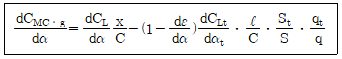
위식에 대한 설명에서 가장 올바른 것은?
- X/C는 날개의 a,c와 비행기의 c,g 사이의 위치이며 항상(+)의 값을 갖는다.
- qt/q는 tail coefficient 이며 St/S는 tail volume factor 이다.
- dCMCㆍgdα= 0 일때 c,g 의 위치를 Basic Neutral Point 라 한다.
- dε/dα는 down-wash의 영향을 나타내며 (-)의 값을 갖는다.
(정답률: 알수없음)
3. 직사각형 날개에서 실속이 제일 처음 일어나는 부분은?
- 날개 뿌리 부분
- 날개끝 부분
- 스팬의 1/4 되는 부분
- 날개의 전부분
(정답률: 알수없음)
4. 유도항력(Induced Drag)에 대한 설명 내용으로 가장 관계 가 먼 것은?
- 날개스팬(Span)이 커지면 감소한다.
- 시위(Chord)가 커지면 증가한다.
- 가로세로비(Aspect Ratio)가 커지면 증가한다.
- 날개면적(S)이 커지면 증가한다.
(정답률: 알수없음)
5. 폭이 3m, 길이가 2m 인 미끈한 평판이 50m/sec의 흐름속에 놓여 있을 때 앞전에서 부터 1m 뒷쪽의 경계층의 두께 δ 는? (단, 동점성계수 υ = 1.5× 10-5m2/sec이며, 경계층의 두께의 식은 층류의 L.Prandtl 식을 이용할 것)
- 0.28cm
- 0.52cm
- 0.63cm
- 0.73cm
(정답률: 알수없음)
6. 수평 비행하는 항공기의 필요마력을 Pℓ 이라 하고 동일한 받음각으로 이 항공기가 선회경사각 ø 로 수평 정상선회 비행을 하는 경우 소요되는 필요마력을 Pt라고 하면 Pt/Pℓ의 값은 어느 것인가?
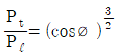
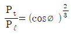
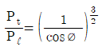
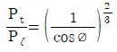
(정답률: 알수없음)
7. 프로펠러 비행기가 항속거리(Range)를 최대로 하기 위한 비행조건은?
- 필요마력을 최소로 한다.
- 양항비를 최대로 한다.
- 추력을 최대로 한다.
- 양항비를 최소로 한다.
(정답률: 알수없음)
8. 수평비행 중에 돌풍을 받아 비행기의 기수가 올라갔다. 그러나 안정한 비행기는 원위치로 되돌아 오려는 모멘트가 작용한다. 이같은 작용은 무엇에 의해서 생기는가?
- 날개에 작용하는 양력의 변화에 의한 모멘트
- 수직꼬리날개(vertical tail)에 의한 비행기 중심에서의 모멘트
- 수평꼬리날개에 의한 비행기 중심에서의 모멘트
- 날개에 작용하는 항력의 변화에 의한 모멘트
(정답률: 알수없음)
9. 날개의 앞전에서 풍압중심까지 거리를 Cp라 하고, 그때의 양력계수를 CL이라 하면, 앞전 둘레의 모멘트 계수 Cmo 의 표현 수식으로 가장 올바른 것은?
- CL×1/Cp
- Cp×1/CL
- CL2×Cp
- CL×Cp
(정답률: 알수없음)
10. 이상유체(ideal fluid) 흐름에서 비회전(irrotation)인 경우 이차원 흐름에 대한 stream function(Ψ ), velocity potential(ø) 및 속도(u, v)의 관계는 다음과 같이 나타낼 수 있다. 가장 올바른 것은?
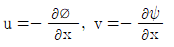
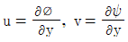
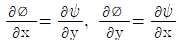
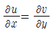
(정답률: 알수없음)
11. 대기온도가 20℃ 일 때 공기 (r = 1.4)중의 음속은? (단, 공기의 기체상수 R = 29.27 m/° K 이다.)
- 340 m/sec
- 343 m/sec
- 345 m/sec
- 347 m/sec
(정답률: 알수없음)
12. 스파이크형의 엔진흡입구에서 그림과 같이 충격파가 형성되어 공기흐름이 지나고 있다. 다음의 설명 중에서 맞는 것은?
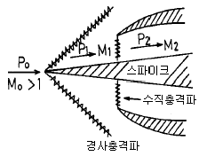
- Mo < M1 < M2
- P1 > P2
- P2 > P1 > Po
- Mo < M1
(정답률: 알수없음)
13. 공기는 그 유속이 저속 일 때 압축성을 무시할 수 있다. 이러한 공기는 다음의 어떤 성질을 무시할 수 있는가?
- 온도의 변화
- 압력의 변화
- 밀도의 변화
- 음속의 변화
(정답률: 알수없음)
14. 항공기가 착륙할 때 활주거리가 단축되는 것은?
- 바람이 앞에서 불때
- 바람이 뒤에서 불때
- 바람이 옆에서 불때
- 바람이 위에서 불때
(정답률: 알수없음)
15. 헬리콥터가 속도 V로 수직 상승할 때 추력을 나타내는 식으로 옳은 것은? (단, 주회전날개의 회전면에 의해 가속되는 유도속도는 Δv 이다.)
- T = ρ AΔ v (V + Δv/2)
- T = ρ AΔ v (V + Δv)
- T = 2ρ AΔ v (V + Δv/2)
- T = 2ρ AΔ v (V + Δv)
(정답률: 알수없음)
16. 항공기의 자기무게(empty weight)에 포함되지 않는 것은?
- 승무원 무게
- 동력장치무게
- 고정 밸러스트(ballast)무게
- 배출불능 윤활유 무게
(정답률: 알수없음)
17. 만약 항공기의 전방 무게중심(C.G) 한계 계산에서 무게 중심(C.G)가 전방 무게중심(C.G) 한계를 1m 벗어난 전방에 있다면, 다음 설명 중 틀린 것은?
- 항공기의 미부에 무게를 증가 시켜야 한다.
- 만약 항공기 전체의 무게가 1000kg라면 1000m-kg의 모멘트가 발생되는 꼴이다.
- 항공기 앞쪽이 원래보다 무거워진다는 의미이다.
- 전방 무게중심(C.G) 한계를 벗어난 경우 항공기 구조물의 형상을 바꾸어야 한다.
(정답률: 알수없음)
18. 다음 설명중 가장 올바른 내용은 어느 것인가?
- 양의 동적안정이면 양의 정적안정이다.
- 양의 정적안정이면 양의 동적안정이다.
- 음의 동적안정(동적 불안정)이면 양의 정적안정이다.
- 가, 나, 다 모두 옳지 않다.
(정답률: 알수없음)
19. 후퇴형 33날개에 대한 설명 내용으로 가장 올바른 것은?
- 직사각형 날개에 비해 wing tip stall이 덜 발생한다
- 직사각형 날개에 비해 임계 마하수가 높다.
- 직사각형 날개에 비해 플랩의 효과가 크다.
- 직사각형 날개에 비해 항공기의 속도가 증가함에 따라 충격파의 발생이 빠르다.
(정답률: 알수없음)
20. 항공기의 무게, 날개의 면적, 운항고도가 일정할 경우, 최대 양력 계수(CL max))가 4배인 날개를 사용하면, 실속속도는 어떻게 변화하겠는가?
- 1/4배 감소
- 1/2배 감소
- 2배 증가
- 4배 증가
(정답률: 알수없음)
2과목: 항공기동력장치
21. 대기중을 Us[m/s]속도로서 수평비행하는 제트기가 2에서 분출가스 속도가 Uj[m/s]일 때, 추력 F㎏은 얼마인가? (단, Ga는 제트기관내를 흐르는 공기유량[㎏/s]이며, 연료유량은 공기유량 보다 아주 적다.)
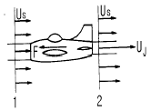
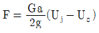
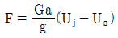
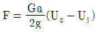
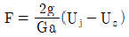
(정답률: 알수없음)
22. 항공기 왕복 엔진에서 Choked bore를 사용하는 주 목적은?
- 연소가스가 압축링을 지나가는 것을 방지
- 정상작동 온도에서 똑바로 내경을 유지
- 과도한 실린더 벽 마모를 방지
- 오일이 실린더 헤드로 들어오는 것을 방지
(정답률: 알수없음)
23. 정속 프로펠러(Constant speed propeller)에서 작동되는 Pilot valve는 무엇에 의해서 제어되는가?
- Booster pump의 Oil압력에 의해서
- Flyweight의 원심력에 의해서
- Booster pump relief valve에 의해서
- 자동제어가 안되며, 수동으로
(정답률: 알수없음)
24. De-Laval 노즐에서 초음속을 낼 수 있는 곳은?
- 수축부분
- 노즐 목(nozzle throat)
- 확산부분
- 경우에 따라 수축 또는 확산 부분
(정답률: 알수없음)
25. 엔진이 노킹(knocking)을 일으키면 여러가지 현상이 나타나지만 엔진의 작동에 직접 영향이 있는 현상은?
- 흡입효율이 나빠진다.
- 연료 소비량이 증대한다.
- 회전속도가 증가한다.
- 실린더 온도가 상승한다.
(정답률: 알수없음)
26. 프로펠러의 직경을 D,회전수를 n,공기밀도를 ρ ,추력계수를 CT라 하면 프로펠러의 추력 T는 어떻게 표시되는가?
- T = CTρ nD2
- T = CTρ n2D4
- T = CTρ n2D2
- T = CTρ n2D6
(정답률: 알수없음)
27. 충동 터빈(impulse turbine)에서 압력강하에 대한 설명으로 가장 올바른 것은?
- 정익(stator)에서 일어난다.
- 동익(rotor)에서 일어난다.
- 정익 및 동익에서 일어난다.
- 정익 및 동익에서 번갈아 가며 주기적으로 일어난다.
(정답률: 알수없음)
28. 9기통 성형 기관의 밸브 캠링(cam ring)위에 4개의 캠로브(cam lobe)가 있다. 캠의 회전속도와 방향에 대하여 가장 올바른 것은?
- 크랭크축 회전속도의 1/8속도, 같은방향
- 크랭크축 회전속도의 1/8속도, 반대방향
- 크랭크축 회전속도의 9/8속도, 같은방향
- 크랭크축 회전속도의 9/8속도, 반대방향
(정답률: 알수없음)
29. 열효율과 연료소비율의 관계를 가장 올바르게 설명한 것은? (단, 발열량은 일정하다.)
- 열효율은 연료소비율의 제곱에 비례한다.
- 열효율은 연료소비율의 제곱에 반비례한다.
- 열효율과 연료소비율은 반비례한다.
- 열효율은 연료소비율에 비례한다.
(정답률: 알수없음)
30. C.F.R 기관이란?
- 시계 비행용의 소형항공기에 장비하는 기관이다.
- 연료의 발열량을 측정하는 기관이다.
- 연료의 내폭성을 시험하는 기관이다.
- 글라이더용 기관이다.
(정답률: 알수없음)
31. 지압선도에 표시되는 넓이는 무엇을 나타내는가?
- 압력
- 배기량
- 일
- 힘
(정답률: 알수없음)
32. 가스터빈 기관의 연료계통을 작업후 연료계통의 누설검사(LEAK CHECK)를 위해 실시하는 기관작동 점검방법의 명칭은?
- 드라이 모터링(DRY MOTORING)
- 웨트 모터링(WET MOTORING)
- 아이들 작동(IDLE)
- 엔진 추력 100% 까지 작동
(정답률: 알수없음)
33. 어떤 왕복기관중에서 배기밸브스템(exhaust valve stem) 내부에 금속 나트륨(metallic sodium)을 사용하는 경우가 있는데 주 목적은 무엇인가?
- 진동감소
- 중량감소
- 냉각촉진
- 충격방지
(정답률: 알수없음)
34. 물질의 열역학적 성질 중 강도성 성질(Intensive Property)은 어느 것인가?
- 질량
- 무게
- 압력
- 체적
(정답률: 알수없음)
35. 프로펠러의 효율을 설명한 내용으로 가장 올바른 것은?
- 프로펠러가 행한 유효일과 엔진에서 얻은 전체 출력과의 비
- 프로펠러의 축마력과 추력마력의 비
- 프로펠러에 입력된 제동마력과 비행기에 사용된 축 마력의 비
- 프로펠러의 기하피치와 유효피치의 비
(정답률: 알수없음)
36. 가스터빈 기관의 연료조절기장치(F.C.U)에 영향을 미치는 요소로 가장 관계가 먼 것은?
- 압축기 출구온도
- 회전수 (rpm)
- 압축기 출구압력
- 항공기 속도
(정답률: 알수없음)
37. 프로니 브레이크(Prony Brake)에 의한 제동마력의 계산식은? (단, P=작용력(㎏), R=아암의 길이(m), n=회전수(rpm), Ne=제동마력)
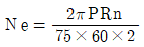
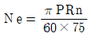
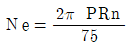
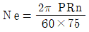
(정답률: 알수없음)
38. throttle valve를 완전히 열었을 때 기화기를 통과하는 공기의 양은 다음 중 무엇이 제한하는가?
- throttle butterfly valve
- venturi
- air screen
- discharge nozzle
(정답률: 알수없음)
39. 그림은 어느 사이클의 T-S선도인가?
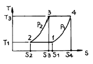
- BRAYTON사이클
- STIRING사이클
- ERICSSON사이클
- JOUIE사이클
(정답률: 알수없음)
40. 내부 에너지= 30Kcal, 압력= 4기압, 체적= 2m3인 계의 엔탈피는 얼마인가?
- 193.6Kcal
- 325.2Kcal
- 223.6Kcal
- 282.7Kcal
(정답률: 알수없음)
3과목: 항공기구조
41. flange가 굽힘모멘트를 전담한다고 가정하면 WEB의 전단 흐름 q는 얼마인가?
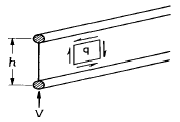
- q = 0
- q = v
- q=v/2h
- q=v/h
(정답률: 알수없음)
42. 감항류"A"류에 속하는 항공기의 설계제한 하중계수(load factor)는 얼마인가?
- 1
- 2.5
- 4.4
- 6.0
(정답률: 알수없음)
43. 고성능항공기의 날개 앞쪽부분(leading edge)에 장착되어 움직이는 Airfoil인 날개슬랫(wing slat)은 주로 어떠한 기능을 하는 것인가?
- 실속속도를 감소시킨다.
- 속도제동기(speed brake)역할을 한다.
- 이륙속도를 증가시켜 준다.
- 날개 뒷부분(trailing edge)의 flap을 대신해준다.
(정답률: 알수없음)
44. 그림과 같은 평면요소에 σ =12000 kg/cm2, τ = 4000kg/cm2 가 작용하고 있다. 이때 이요소에 존재하는 최대 주응력은 대략 얼마 정도인가?
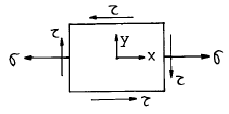
- 1220 kg/cm2
- 13210 kg/cm2
- 2440 kg/cm2
- 3660 kg/cm2
(정답률: 알수없음)
45. x, y 평면 응력 상태에서 수직응력을 각각 σx, σy, 전단응력을τ xy, 물체력(Body force)을 각각X,Y라 하면 재료내 임의의 점에 있어서의 미소부분에 대하여 x축 방향의 힘의 평형 방정식은 어느 것인가?
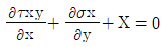
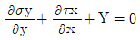
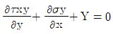
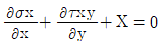
(정답률: 알수없음)
46. 1차 조종면의 앞전(leading edge)에 counter weight를 부착하여 정적안정을 유지시켜 주는 가장 큰 이유는?
- 지상에서 비행조종 장치가 구조적으로 안전하게 하기 위하여
- 비행조종면의 tab을 제거시키기 위해
- 비행조종면의 진동(flutter)의 가능성을 배제시키기 위해
- 조종장치의 Rigging을 간편하게 하기 위해
(정답률: 알수없음)
47. 재료 단면의 도심주축에 대한 설명 내용으로 가장 관계가 먼 것은?
- 도심을 지나는 한쌍의 직교축이다.
- 어떤 단면이든지 간에 반드시 한쌍의 도심 주축을 갖는다.
- 이축에 대한 관성 상승 모멘트(product moment of inertia)는 최대 혹은 최소치를 갖는다.
- 단면의 대칭축은 반드시 도심주축의 하나이다.
(정답률: 알수없음)
48. 다음 기둥의 좌굴에 대한 임계하중은 대략 얼마인가? (단, E=30×106psi임.)
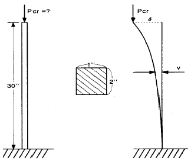
- 13,740lb
- 34,920lb
- 54,830lb
- 109,710lb
(정답률: 알수없음)
49. 그림이 나타내는 페일쎄이프구조( failsafe structure) 형식은?
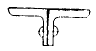
- 다경로 하중구조
- 이중구조
- 대치구조
- 하중경감구조
(정답률: 알수없음)
50. 섬유보강 플라스틱 복합재료의 장점이 아닌 것은?
- 무게가 가벼워서 항공기 등의 경량 구조에 적합하다.
- 고성능 재료로 만들기에 단가가 저렴하다.
- 무게에 비해 강도, 강성이 우수하다.
- 적층 배열을 변화시켜 목적에 따라 설계를 수행할 수 있다.
(정답률: 알수없음)
51. 질량이 150kg인 모터가 각각 120kN/m의 스프링상수를 가지는 4개의 스프링으로 지지되어 있을 때, 공진의 진동수는 약 얼마 정도인가?
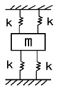
- 270 rpm
- 380 rpm
- 440 rpm
- 540 rpm
(정답률: 알수없음)
52. 판에 있어서의 에어리스 스트레스 함수(Airy's stress function) ∮가 ∮= 3x2y + 2x2y2 + xy + 6 으로 주어졌다. x=2, y=3인 점에 있어서의 x방향 응력σx는?
- 4
- 8
- 12
- 16
(정답률: 알수없음)
53. 기둥의 임계하중 Pcr에 대한 설명 내용으로 가장 관계가 먼 것은?
- 기둥의 길이의 제곱에 반비례한다.
- 기둥의 세장비(slenderness ratio)에 비례한다.
- 재료의 탄성계수에 비례한다.
- 기둥의 양단 지지 조건에 관계된다.
(정답률: 알수없음)
54. 항공기에 사용되는 조종케이블의 장력에 대한 설명중 가장 올바른 것은?
- 추운겨울에는 조종케이블의 장력은 감소한다.
- 추운겨울에는 조종케이블의 장력은 증가한다.
- 조종케이블은 일정온도까지는 케이블의 장력에 영향을 주지 못한다.
- 조종케이블의 장력은 온도와 무관하다.
(정답률: 알수없음)
55. 항공기 구조 설계를 수행할 때, 초기 설계 단계에서 적절하지 못한 것은?
- 단순한 해석 도구를 사용하여 반복 해석을 통해 설계 변수의 추이를 살펴서 초기 설계를 수행한다.
- 상세한 해석을 수행할 필요가 없고, 개략적인 해석으로도 충분하다.
- 유한요소등의 소프트 웨어를 사용하여 최적 설계를 수행한다.
- 동적 해석에 의한 시간 응답 등은 이 단계에서 수행하지 않아도 된다.
(정답률: 알수없음)
56. 보의 순수만곡(PURE BENDING)에 대한 설명중 틀린 것은?
- 순수만곡 부분에 있어서 전단력은 없다.
- 보의 단면이 대칭축을 가질 때만이 순수만곡을 받을 수 있다.
- 순수만곡 부분에서 변형곡선은 단면이 일정하면 원호를 이룬다.
- 전단력이 일정한 부분에서 보는 순수만곡이 아닐수도 있다.
(정답률: 알수없음)
57. 조화운동이 진폭 10mm, 진동수 20Hz일 때, 최대속도와 최대 가속도가 맞게 연결된 것은?
- 1.257m/sec, 157.914m/sec2
- 0.628m/sec, 157.914m/sec2
- 0.628m/sec, 39.478m/sec2
- 1.257m/sec, 39.478m/sec2
(정답률: 알수없음)
58. 기체구조에 있어서 buckling 현상을 막기 위하여 외피 내부에 다음의 부재 중 어느것을 부착하는가?
- fabric
- stringer or stiffener
- former
- spar
(정답률: 알수없음)
59. 단면적이 5cm2, 길이 2m인 봉을 탄성한계내에서 200.4cm 로 늘리는데 800kg의 인장력이 필요하다. 포와손비가 0.3이라할 때 이 재료의 전단탄성 계수(G)는 대략 얼마인가?
- 20,500kg/cm2
- 30,800kg/cm2
- 40,000kg/cm2
- 80,000kg/cm2
(정답률: 알수없음)
60. 다음과 같이 일정한 장력 T가 작용하는 줄의 수직 방향의 고유진동수를 올바르게 표시한 것은? (단, 변위는 작다고 가정한다.)
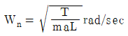
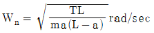
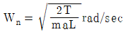
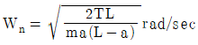
(정답률: 알수없음)
4과목: 항공장비
61. 다음 중 Brake Actuator에 사용되는 Actuator Type은?
- Single Actuating Actuator
- Double Actuating Actuator
- Double Actuating Balanced Actuator
- Cushion Type Actuator
(정답률: 알수없음)
62. 항공기에서 널리 사용되고 있는 유량계가 아닌 것은?
- 피스톤식 유량계
- 차압식 유량계
- 면적식 유량계
- 질량 유량계
(정답률: 알수없음)
63. 프레온 공기조절 장치에 증발기(evaporator)의 목적은 무엇인가?
- 프레온의 압력을 증가하기 위하여
- 가스로 부터 액체로 변화시키기 위하여
- 프레온의 압력을 감소시키기 위하여
- 객실공기로 부터 열을 뺏기 위하여
(정답률: 알수없음)
64. 항공기에 사용되는 직류 발전기로서 가장 관계가 먼 것은?
- 분권계자 발전기
- 분권계자가 강한 복권계자 발전기
- 랩(lap)권선 아마튜어 발전기
- 직권계자 발전기
(정답률: 알수없음)
65. 공기가 단열변화를 한다고 가정할 때, 압축2/팽창1에 따른 압력(P)과 온도(T)와의 관계를 가장 올바르게 표시한 것은? (단, r=비열비)
- P2= P1(T2/T1)r/(r-1)
- P2= P1(T2T1)(r-1)/r
- P1= P2(T2/T1)(r-1)/r
- P1= P2(T2/T1)r/(r-1)
(정답률: 알수없음)
66. 다음 방위에 대한 설명 중 틀린 것은?
- 진방위란 지축의 북방에서 항공기의 진로를 시계방향으로 잰 각을 말한다.
- 자방위란 지자기축의 북방에서 항공기의 진로를 시계방향으로 잰 각을 말한다.
- 나방위란 나침반의 나침의 북에서 항공기의 진로를 시계방향으로 잰 각을 말한다.
- 진방위는 자방위에 자차 및 편각을 합한 값으로 즉, 진방위 = 자방위 + 자차 + 편각 이다.
(정답률: 알수없음)
67. 전기 저항식 온도계에서 온도 탐지부위의 저항을 감소시키면 온도계의 지시는 어떻게 되는가?
- 낮게 지시한다.
- 높게 지시한다.
- 변화가 없다.
- 주위 여건에 따라 다르다.
(정답률: 알수없음)
68. 대형 항공기의 Equipment Cooling System에 대한 설명 중 잘못된 것은?
- Equipment cooling System은 Electric Power만 공급되면 항상 작동되어야 한다.
- 비행시 Cooling Fan이 고장나면, 차압을 이용하여 Cooling 할 수 있다.
- Ground Exhaust Valve는 비행 중 Smoke가 감지되면 열려 Cooling Air를 외부로 배출한다.
- 지상에서 외부온도가 일정온도 이상이면 Ground Exhaust Valve가 Open되어 뜨거워진 Cooling Air를 외부로 배출한다.
(정답률: 알수없음)
69. 자이로 계기들의 자유도에 관한 설명으로 가장 올바른 것은?
- 정침의(Direction Gyro)-자유도 3, 선회계-자유도 3
- 인공수평의-자유도 2, 선회계- 자유도 3
- 선회계-자유도 2, 인공수평의(Gyro Horizon)-자유도3
- 정침의-자유도 2, 선회계-자유도 2
(정답률: 알수없음)
70. 수정대기속도(Calibrated Air Speed, CAS)에 공기의 압축성 효과와 고도변화에 따른 밀도수정을 하면?
- 등가대기속도(Equivalent Air Speed, EAS)
- 지시대기속도(Indicated Air Speed, IAS)
- 진대기속도(True Air Speed, TAS)
- 수정대기속도 그대로
(정답률: 알수없음)
71. 가동코일(coil)형 계기로 교류전압과 전류를 측정하고자 할 때 필요한 것은?
- 배율기
- 정류기
- 변류기
- 분류기
(정답률: 알수없음)
72. FMS(Flight Management System)의 주요기능에 포함되지 않는 것은?
- 조종사 작업부담감소
- 비행 안전성 향상
- 연료 절감
- 자동착륙
(정답률: 알수없음)
73. 직류 전동기에서 보상 권선을 사용하는 주 목적은?
- 회전수를 일정하게 유지하기 위하여
- 속도 제어를 하기 위하여
- 전기자 반작용을 감소하기 위하여
- 토크를 증가시키기 위하여
(정답률: 알수없음)
74. 고도설정방식 중에서 진고도(true altitude)를 지시하는 것은?
- QNE
- QFE
- QNH
- QFH
(정답률: 알수없음)
75. 여압밸브(outflow valve)의 설치 목적은?
- 항공기 외부의 공기를 내부로 들여 보내서 객실압력을 제어하기 위하여
- 객실내의 공기압력을 제어하기 위하여
- 객실내의 공기온도를 제어하기 위하여
- 객실내의 공기압력과 온도를 제어하기 위하여
(정답률: 알수없음)
76. 최근 항공기에 탑재되어 항공기와 산악 또는 지면과의 충돌 사고를 방지하는 장치는?
- WEATHER RADAR
- INS
- GPWS
- RADIO ALTIMETER
(정답률: 알수없음)
77. 다음 항공기 유압회로에서 꿩밸브의 이름은?
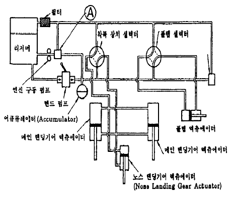
- 셀렉터 밸브
- 언로-딩 밸브
- 릴리이프 밸브
- 첵크 밸브
(정답률: 알수없음)
78. 조종실 음성기록장치(cockpit voice recorder)에 기록되는 데이터와 가장 관계가 먼 것은?
- 무선에 따른 항공기내에서 송.수신하는 음성통신(관제 교신)
- 조종실내 승무원의 음성통신(승무원의 대화)
- 객실 승무원의 음성통신(객실 승무원의 대화)
- 헤드셋(Headset) 또는 스피커로 전해지는 음성(항행안전시스템 또는 계기확률시스템에 사용되는 마커음)
(정답률: 알수없음)
79. 교류발전기의 주파수는 60 Hz이고, 회전수가 매분 1800회 일 때 이 발전기의 극수는?
- 2
- 4
- 8
- 12
(정답률: 알수없음)
80. 교류의 주파수가 증가하면 가장 크게 증가하는 값은?
- 인덕턴스
- 캐패시턴스
- 임피턴스
- 레지스턴스
(정답률: 알수없음)
5과목: 항공제어공학
81. 그림은 특성방정식의 근궤적을 나타낸 것이다. 특성방정식을 가장 올바르게 표현한 식은?
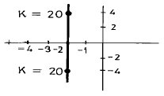
- S(S+4)+K=0
- (S+4)+KS=0
- S+K(S+4)=0
- KS(S+4)=0
(정답률: 알수없음)
82. 전달함수가 K/s(s2+3s+16)=0 시스템의 단위피드백 제어계를 구성하였다. 이 시스템의 근궤적이 허수축을 교차하는 절편값과 이 때의 제어 이득값 K 는?
- 절편=±j 3, K=16
- 절편=±j 4, K=48
- 절편=±j 5, K=24
- 절편=±j 6, K=56
(정답률: 알수없음)
83. 그림과 같은 특성 방정식의 근위치는 좌표계의 어떤 평면상에 있으며 제동비(DAMPING RATIO)δ 값은 어떤상태인가?
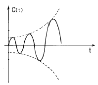
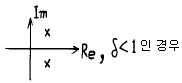
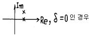
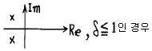
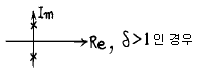
(정답률: 알수없음)
84. 항공기의 세로안정성은 dCm/dα 로 판단한다. 만약 dCm/dα 의 절대값이 증가하면 항공기의 운동특성에는 어떤 영향을 미치는가?
- 장주기 운동의 감쇄율
- 장주기 운동의 고유진동수
- 단주기 운동의 감쇄율
- 단주기 운동의 고유진동수
(정답률: 알수없음)
85. 항공기에 적용한 어떤 제어계의 특성방정식이 S(S+4)(S+6)+K=0 일 때 이 항공기가 안정될 K값의 조건을 가장 정확하게 정하면?
- K < 240
- K = 240
- 0 > K
- 240 > K > 0
(정답률: 알수없음)
86. 그림의 블럭선도(Block)에서의 전달함수를 구하면?
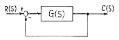
- 1+G(S)/G(S)
- G(S)
- 1+G(S)
- G(S)/1+G(S)
(정답률: 알수없음)
87. 그림과 같은 근궤적을 가장 올바르게 판단한 것은?
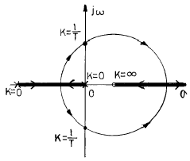
- 이득이 1/T보다 커야 안정하다.
- 최소 위상계(minimum phase system)가 아니다.
- 한개의 미분요소를 포함하고 있다.
- 원의 반지름은 1이다.
(정답률: 알수없음)
88. 그림의 기계요소의 결합방식을 가장 올바르게 설명한 것은?
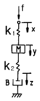
- k2, B와 병렬, k1과 M는 직렬연결
- k1, M, k2, B는 서로 병렬연결
- 서로 직렬연결된 M, k2 와 B 및 k1은 병렬연결
- k1, M, k2, B는 서로 직렬연결
(정답률: 알수없음)
89. Cycling을 일으키는 제어는?
- 비례제어
- 적분제어
- ON-OFF제어
- 비례적분제어
(정답률: 알수없음)
90. 항공기의 롤(roll) 운동특성을 스프링-질량-감쇄기에 비유할 때 빠진 요소는?
- 스프링
- 질량
- 감쇄기
- 빠진 요소 없음
(정답률: 알수없음)
91. 모든 초기조건이 0 이고 단위임펄스 f(t)=u1(t)를 계에 가할 때 다음 식에 의해 나타내지는 계의 응답은? (단, D=d/dt이다.)
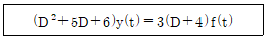
- y(t)=6e-2t-3e-3t
- y(t)=4e-2t-3e-3t
- y(t)=6e-2t-2e-3t
- y(t)=3e-2t-6e-3t
(정답률: 알수없음)
92. 회전운동계에서 질량 M에 대응되는 양은?
- 회전력 T
- 각속도 ω (오메가)
- 관성모멘트 J
- 각 변위량 Q
(정답률: 알수없음)
93. 라프라스 변환의 값이 1/S2이 되는 함수는 어느 것인가?
- 단위포물선함수(unit paraboric function)
- 단위램프함수(unit ramp function)
- 단위계단함수(unit step function)
- 단위임펄스함수(unit impulse function)
(정답률: 알수없음)
94. 그림과 같은 상태방정식으로 주어지는 계의 과도응답 특성은 어떠한가?
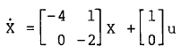
- 발산진동
- 감쇠진동
- 순수발산
- 순수감쇄
(정답률: 알수없음)
95. 힘 f(t)의 입력에 의하여 움직이는 질량 M의 물체좌표를 출력 y(t)라 할 때 가한 힘에 대한 전달함수는?
- MS2
- 1/MS2
- 1/MS
- MS
(정답률: 알수없음)
96. 어떤 항공기의 종적운동 방정식의 4차 방정식의 인수분해 형태가 (S2+2S+4)(S2+6S+25) = 0일 때 장주기 종적진동 (Phugoid mode)의 주파수와 감쇄계수 ζP는?
- ωnP = √3 , ζP = 1
- ωnP = -1, ζP = 3
- ωnP = 2, ζP = 0.5
- ωnP = 5, ζP = 0.6
(정답률: 알수없음)
97. 개루프 전달함수에 극점을 추가할 경우, 추가된 극점이 시스템에 주는 영향이 아닌 것은?
- 시스템을 보다 안정하게 만든다.
- 근궤적을 복소평면에서 우측으로 당긴다.
- 시스템의 상대적 안정도를 낮춘다.
- 시스템 반응의 정착시간을 느리게 한다.
(정답률: 알수없음)
98. 어떤 계의 특성방정식 근이 다음과 같다. 이 계가 평형상태에서 벗어났을 때의 반응은 어떠한가? (단, j= -1 )
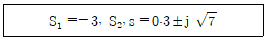
- 순수감쇄
- 순수발산
- 발산진동
- 감쇄진동
(정답률: 알수없음)
99. 자동제어계의 응답이 지수함수적으로 감소하려면 특성방정식의 근은 어느 것인가?
- 부의 실근
- 정의 실근
- 공액복소근
- 공액허근
(정답률: 알수없음)
100. 근궤적의 점근선과 실수축이 이루는 각도와 교점을 구할 때 상관없는 인자는?
- 영점의 갯수
- 극점의 갯수
- 개루프 극점의 총합
- 풍근의 갯수
(정답률: 알수없음)